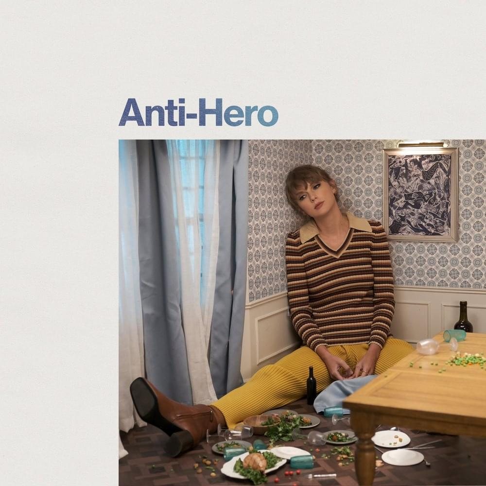
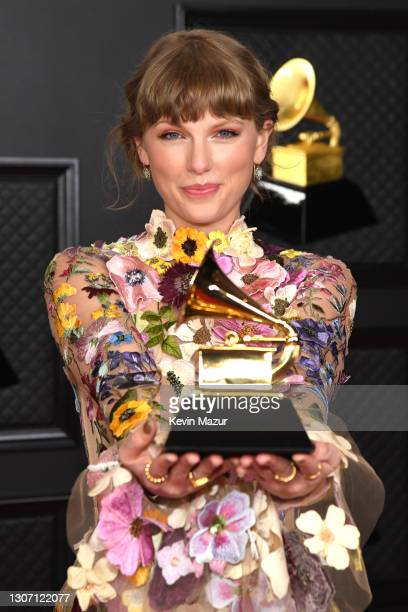

sus primeros 4 albumes son completamente country
desprendiento exitos como YOU BELONW WITH ME, LOVE STORY, 22, I KNEW YOU WERE TROUBLE

paso por una muuuuuy mala reputacion lo que la llevo a desaparecer por meses, asi cancelando lo que seria su 6to album de estudio
para dar vida al ICONICO come back de la decada LOOK WHAT YOU MADE ME DO
fue muy aclamado por la critica pero no gano ningun grammy ya que nunca asistio a premiaciones, debido a su mala reputacion con los medios del entretenimiento, dejando asi que el album contara su propia historia
FOLKLORE & EVERMORE
Tras el lanzamiento de su 10mo album de estudio taylor swift rompio el record al meter TODAS sus canciones dentro dle top 10 en la lista billboard, siendo la primera en toda la histia en hacerlo
|
su canion anti-hero a pasado ya medio año dentro del chart, siendo su cancion con estabilidad en la lista |
 |
|  |
INDUSTRIA MUSICAL |